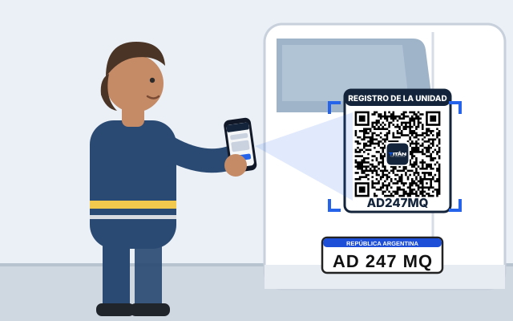
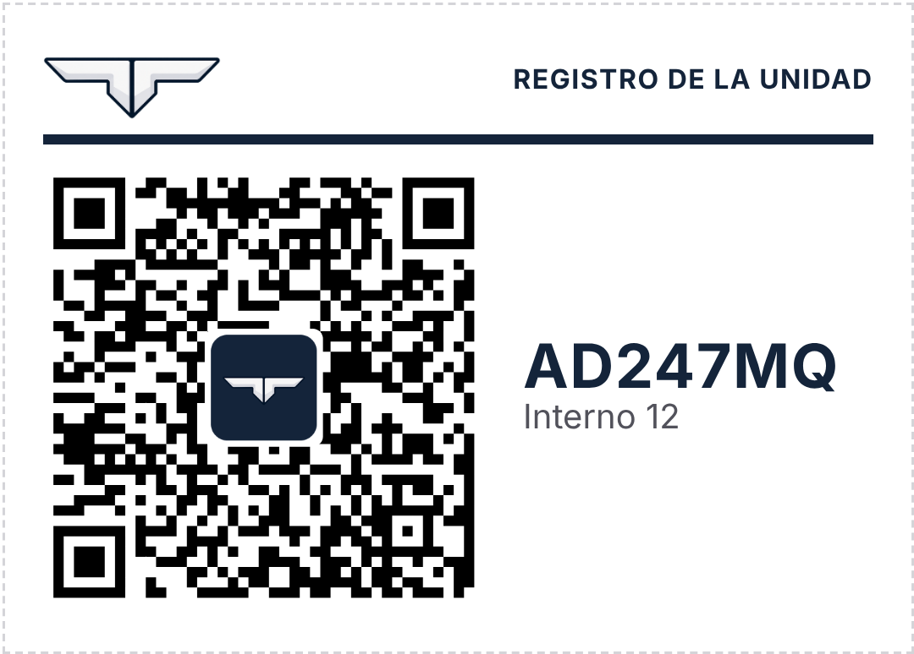
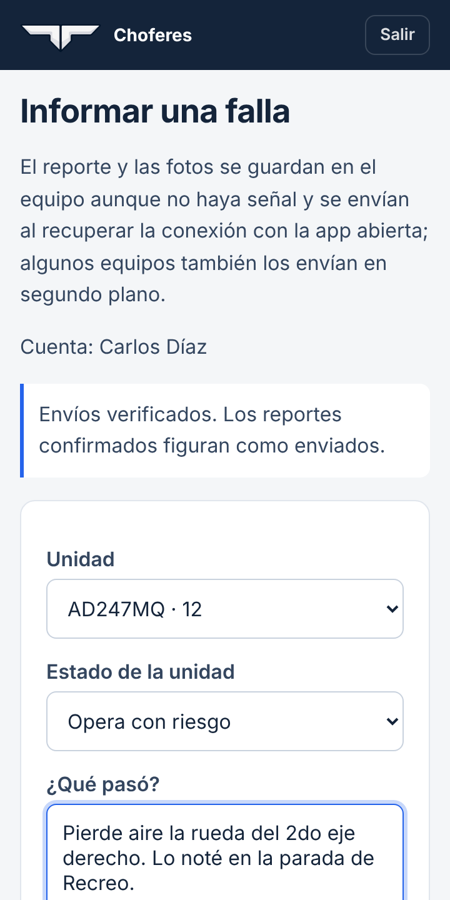
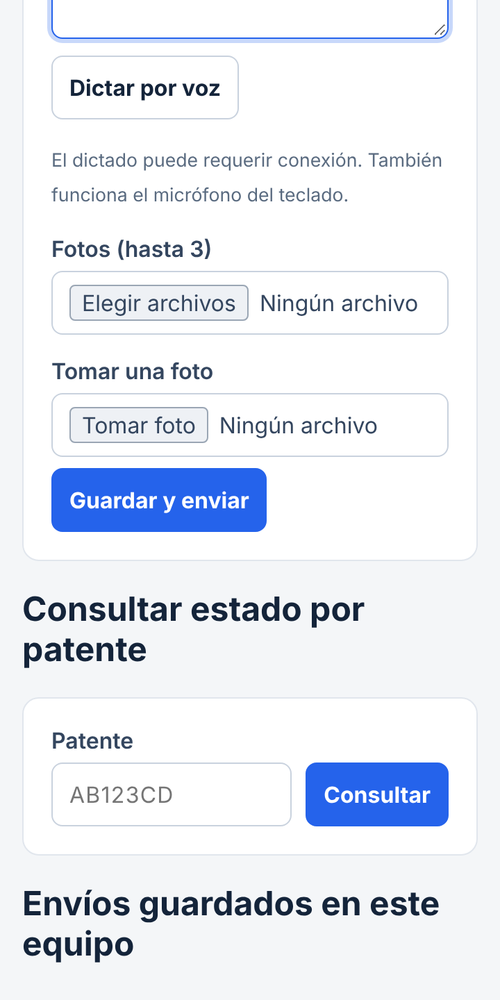

Instructivo · ChoferesInformar una falla

Una falla, un reporte, desde el celular.Funciona aunque no haya señal: el reporte queda guardado y se envía solo al volver la conexión.
1
Escanear el QR
Con la cámara del celular, apuntar al QR del camión. La primera vez, entrar con el usuario.

2
Contar qué pasó
La unidad ya aparece elegida. Marcar el estado y escribir o dictar la falla.

3
Fotos y enviar
Hasta 3 fotos. Tocar Guardar y enviar. Sin señal, queda pendiente.

Unidad parada: elegir «Unidad parada» para que el taller lo vea primero.
Seguimiento: «Consultar estado por patente», abajo del formulario.
iPhone: Compartir → «Agregar a pantalla de inicio».
Android: menú ⋮ → «Agregar a la pantalla principal».
Sin señal: la app abre igual si se entró antes con conexión.
Otro usuario: Salir, arriba a la derecha.
Titán Flota · Choferesapp.titanfleetmanagement.com/choferes/